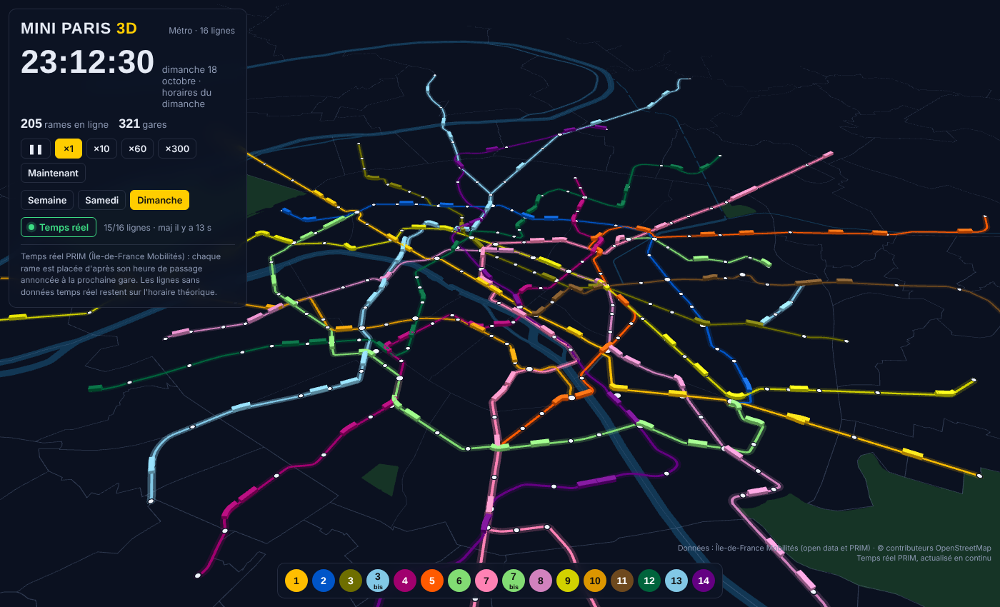

Comment ça marche
Mini Paris 3D montre les 16 lignes du métro parisien en 3D, avec les rames qui roulent, les prochains départs de chaque gare et l'état du trafic. Voici d'où viennent les données, comment la carte est calculée, et ce qu'il faut savoir de ses limites.

1Ce que montre la carte
- Les rames en circulation, découpées en voitures (6 sur les lignes 1 et 4, 8 sur la 14), qui roulent de gare en gare. Un clic sur une rame affiche sa direction et ses prochains arrêts avec leur heure.
- Le tableau des départs de chaque gare : les deux prochains passages, ligne par ligne et par direction.
- L'info trafic : lignes perturbées (halo orange ou rouge), gares non desservies (anneau rouge), avec le message officiel.
- La recherche d'une gare ou d'une ligne, et un lien partageable pour chaque gare (
?gare=chatelet) et chaque ligne (?ligne=14). - Le suivi d'une rame et la vue cabine, qui place la caméra dans l'axe de la voie.
- Une horloge réglable (×1 à ×300) et le choix du type de jour, pour rejouer une journée sur les horaires théoriques.
- Trois analyses (version 2) : la fréquentation des stations, leur accessibilité en fauteuil roulant, et les isochrones depuis une gare. Elles sont détaillées plus bas.
- Voir la rue : la photo de rue libre la plus proche de la station, à 360° quand elle existe.
- Une apparence claire ou sombre, ou automatique : clair le jour et sombre la nuit, selon le lever et le coucher du soleil à l'heure affichée.
La version 1 reste en ligne telle qu'elle était, pour comparer.
2Ce qui est sûr, ce qui est estimé
Le métro ne publie pas la position GPS de ses rames. La carte part des heures de passage en gare et calcule où se trouve chaque rame entre deux gares.
Sûr
- Les heures de passage annoncées par PRIM (en gras dans la fiche d'une rame)
- Les perturbations et les gares non desservies
- Les horaires théoriques officiels
Estimé
- La position d'une rame entre deux gares
- Les heures marquées
~, déduites de l'horaire théorique - Les rames pâles : leur ligne n'a pas de donnée temps réel à cet instant
En cas de doute, les écrans en station et le site d'Île-de-France Mobilités font foi.
3Les analyses
Fréquentation
Chaque station porte une colonne dont la hauteur est le nombre d'entrées pendant l'heure affichée : avec l'horloge accélérée, on voit la ville se remplir le matin et se vider le soir. Le calcul croise deux jeux de données d'Île-de-France Mobilités : le nombre de validations par jour (on garde la médiane des jours de semaine, des samedis et des dimanches d'avril à juin 2026) et la part de chaque heure dans la journée, station par station.
Accessibilité en fauteuil roulant
Le GTFS indique, arrêt par arrêt, si l'on peut y monter en fauteuil roulant. La carte le lit ligne par ligne : une station est « accessible » si toutes ses lignes le sont, « en partie » si seulement certaines le sont. Le constat est net : en dehors de la ligne 14 et de quelques prolongements récents, le métro parisien n'est pas accessible.
Isochrones
Depuis une gare et à l'heure affichée, la carte calcule l'heure d'arrivée la plus tôt dans toutes les autres stations, avec l'algorithme Connection Scan sur les horaires théoriques (3 minutes par correspondance). Elle prolonge ensuite à pied, à 4,5 km/h et sur 1 km au plus, sur une grille de 150 m. Les couleurs donnent le temps porte à porte : moins de 15, 30, 45 et 60 minutes.
Voir la rue
La photo vient de Panoramax, la photothèque de rue libre soutenue notamment par l'IGN et OpenStreetMap France. La carte cherche la photo la plus proche à moins de 80 m, de préférence à 360°, et l'oriente vers la station. S'il n'y en a pas, un lien ouvre Google Street View au même endroit.
4Les données
Toutes les données sont publiques et gratuites.
| Donnée | Source | Mise à jour |
|---|---|---|
| Tracés des lignes et gares | Open data Île-de-France Mobilités (référentiel des lignes, des arrêts et des tracés) | À chaque reconstruction |
| Horaires théoriques | GTFS Île-de-France Mobilités : environ 13 millions d'horaires, dont on ne garde que le métro | À chaque reconstruction |
| Heures de passage en temps réel | API PRIM « Prochains passages – estimated timetable » (format SIRI), ligne par ligne | Chaque minute |
| Perturbations | API PRIM « Perturbations » (disruptions bulk), filtrée sur le métro et sur les périodes en cours | Toutes les 2 minutes |
| Ville en 3D, rues, Seine, bois | OpenStreetMap, tuiles vectorielles OpenFreeMap (schéma OpenMapTiles), avec la hauteur des bâtiments | À l'affichage |
| Fréquentation | Open data Île-de-France Mobilités : validations par jour et profils horaires par type de jour, réseau ferré (2e trimestre 2026) | À chaque reconstruction |
| Accessibilité | GTFS Île-de-France Mobilités, champ wheelchair_boarding des arrêts | À chaque reconstruction |
| Photos de rue | Panoramax (API ouverte, photos sous licence ouverte), affichées avec Pannellum | À la demande |
| Fond de secours | OpenStreetMap via l'API Overpass (eau, bois, limites communales), embarqué dans la page | À chaque reconstruction |
5La méthode
- Le réseau. Les tronçons entre gares sont regroupés en graphe par ligne (Python, NetworkX), puis assemblés en itinéraires de terminus à terminus, branches comprises (lignes 7 et 13).
- Les horaires. Le GTFS est lu en flux pour ne garder que le métro. Les trajets sont compressés en « motifs » (une suite de gares sur un tracé) et en profils horaires réutilisables : toute la semaine tient dans la page.
- La position des rames. Entre deux gares, la rame avance le long du tracé avec une courbe d'accélération et de freinage, pour arriver à l'heure prévue.
- Le temps réel. Pour chaque rame annoncée par PRIM, la carte retrouve son parcours (ligne, terminus, gares annoncées) et en déduit où elle se trouve. Les doublons du flux sont fusionnés.
- Le rapprochement des noms. Une même gare peut s'écrire différemment selon la source (« Alma - Marceau » / « Alma-Marceau »). Chaque arrêt est donc rattaché à la gare la plus proche de la même ligne, par la géométrie plutôt que par le texte.
- Le rendu. MapLibre GL JS dessine la ville et ses bâtiments en 3D ; deck.gl dessine par-dessus les voies, les quais et les rames, voiture par voiture, avec un éclairage 3D.
6Le relais temps réel
L'API PRIM demande une clé personnelle, qui ne doit jamais apparaître dans une page web. Un petit relais fait donc l'intermédiaire :
- En ligne, un Cloudflare Worker garde la clé en secret, interroge PRIM ligne par ligne (en gardant chaque ligne une minute en mémoire pour ménager le quota) et ne renvoie à la carte qu'un résumé léger.
- Sur un ordinateur, le script
serveur_temps_reel.pyfait la même chose, sans aucune bibliothèque à installer.
Si le relais ne répond pas, la carte reste sur les horaires théoriques, et le dit.
7Les limites
- Les horaires théoriques sont ceux de la semaine du 24 novembre 2026 : il faut relancer la chaîne de traitement pour les mettre à jour.
- Si une rame perd du temps entre deux gares, la carte ne le sait qu'à l'annonce suivante.
- Le flux PRIM du métro donne les heures annoncées, pas les heures prévues : il ne permet pas de mesurer un retard comme pour un train. Dans le métro, l'information utile est surtout l'état du trafic.
- Les isochrones ne comptent ni l'attente du premier métro au-delà de l'horaire, ni les couloirs de correspondance réels : c'est un ordre de grandeur.
- La fréquentation compte les entrées aux portiques du métro (RATP), pas les voyageurs en correspondance ni ceux du RER SNCF.
- L'accessibilité vient du GTFS ; l'état des ascenseurs en direct n'est pas encore affiché.
- Le RER et le Transilien ne sont pas encore représentés.
8Inspiration et outils
L'idée vient de Mini Tokyo 3D d'Akihiko Kusanagi, la carte 3D des transports de Tokyo en temps réel. Mini Paris 3D n'en reprend pas le code : il en transpose le principe au métro parisien. L'info trafic, la fiche d'une rame et la distinction entre le sûr et l'estimé s'inspirent aussi des cartes de trains en direct comme Tchouu.
Outils : Python (NetworkX) pour la chaîne de données, MapLibre GL JS et deck.gl pour le rendu, OpenFreeMap pour le fond de carte, Pannellum pour les photos à 360°, Cloudflare Workers pour le relais. Code source : github.com/mawa399/mini-paris-3d-metro.